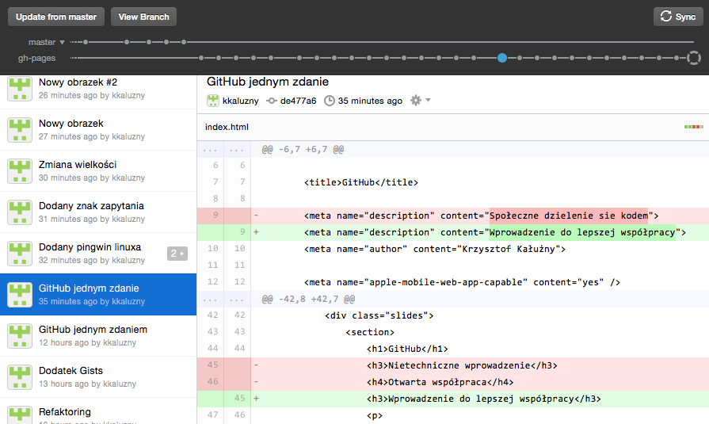

GitHub
Wprowadzenie do lepszej współpracy
Autor Krzysztof Kałużny
Założenia wstępne
- Dla pasjonatów nowych technologii
- Zaczniemy od początku
- Mogą pojawić się uproszczenia
- Slaidy to nie moja najmocniejsza strona
Agenda
- Wstęp
- Co GitHub znaczy dla mnie
- Co GitHub może znaczyć dla was
- Zakończenie
Technologia kosmiczna
Inne przykłady
- Panel słoneczny
- Wykrywacz dymu
- Akumulatorowe narzędzia remontowe
- Filtr do wody
- Wysokowydajna dioda LED
GitHub w jednym zdaniu
GitHub to internetowa platforma oferująca
- przechowywanie i upublicznianie kodu
- rozbudowane narzędzia ułatwiające współprace
- łączenie ludzi z całego świata
Jak do tego doszło

Git
- Narzędzie do kontroli wersji
- Ułatwiona praca w grupie
- Przeznaczony (głównie) do pracy z kodem
- Darmowy
- Klient linii poleceń
Jaka znowu kontrola wersji
Terminal / Konsola
git add index.html
git commit -a -m "Małe poprawki"
git push origin master
GitHub klient
Demo
- Założymy nowe repozytorium
- Wprowadzimy dane
- Utracimy lokalną kopię
- Odzyskamy dane
GitHub

Przykłady pracy w zespole
- HoTT podręcznika matematyczny
- "Manuel, the magnificent mechanical man"
- Travel Guide
- Projekty open-source
GitHub Workflow
fork - pull - merge
Inne narzędzia współpracy
- komentarze
- bug/issue tracking
- follow
- star
- wiki
Niestandardowe zastosowania
- Przepisy kulinarne
- Zaproszenia ślubne
- Projekt OpenData
- Gregoriańskie utwory
Jak GitHub może przydać się wam!
- Historia moich zmian
- Praca w grupie
- Prezentacje on-line
- Blog
- CV
- GitHub w szkole
- Lista zadań
- GitHub Gist
Ciekawe projekty
Książki
Narzędzia do prezentacji
Ciekawe projekty
Gry
Mindmapy
Dalsza nauka
Podsumowanie
- GitHub to nie tylko narzędzie dla programistów
- Może przydać się wam w codziennym życiu ...